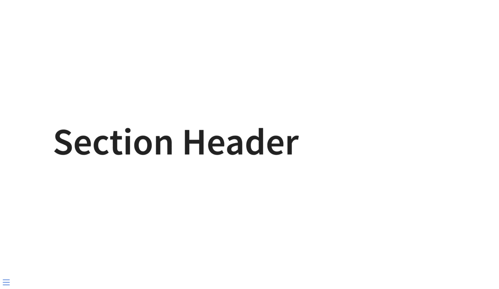

Hello and welcome back to my multi-part series about what I like to call slidecrafting; The art of putting together slides that are functional and aesthetically pleasing. I will be using quarto presentations as my medium, but the advice should be fairly tool-agnostic. This is the third post, you can find the previous post under the category slidecraft 101.
Today we will be looking at how we can create a theme with multiple variants. This way you can have black/white variants, white/red/blue, or any number of different styles. If you are familiar with xaringan you have seen an inverse theme variant already.
What is a variant?
When we are slidecrafting, and you start having many slides. It can be helpful to bucket them into fewer types of slides. This way you can reuse the same style many times with minimal copy-pasting.
Using colors to create multiple variants of the same theme allows us to quickly add similar looking, yet different styles. The inverse theme variant of {xaringan} was a dark grey background slide, that accompanied the white background themed default. I and many other people found this inverse theme helpful for creating a break in slides. Typically using it as a section break or a background on which to show a quote.
You can also imagine having a couple of more similar theme variants that are used to denote theory/practice, idea/execution, pros/cons. The opportunities are endless, and we are not limited to only 2. I have in the past used themes that slowly changes colors as the slides progressed through the topics.
The SCSS basics
Fortunately, adding this behavior in quarto revealjs slides. We need 2 things:
- Mark slides that have each theme variant
- include css/scss to style each theme
In our .qmd document we can denote each slide as a class with the following syntax
## Slide
## Slide {.variant-one}
## Slide {.variant-two}this gives the slides the corresponding css class which we can create styles for. Notice how the first slide doesn’t have a variant specified. Depending on your usage, it is easier to have a good base style, and only use {.class} to specify when you want a different class.
create a .scss file and add it to the themes in the yaml section
format:
revealjs:
theme: [default, styles.scss]And in the .scss file, we add the boilerplate information.
/*-- scss:defaults --*/
/*-- scss:rules --*/Under the /*-- scss:rules --*/ section we can now specify all the css rules we want. And we do this by prefixing .variant to each style. As an example, if we want to change the color of the text we use .variant-one {color: blue;}, or the link color .variant-one a {color: green;}.
You can quite quickly end up making many changes. And this is where I find it helpful to use scss nesting. Nesting allows us to rewrite
.variant-one {
color: #d6d6d6;
}
.variant-one h1, h2, h3 {
color: #f3f3f3;
}
.variant-one a {
color: #00e0e0;
}
.variant-one p code {
color: #ffd700;
}as
.variant-one {
color: #d6d6d6;
h1, h2, h3 {
color: #f3f3f3;
}
a {
color: #00e0e0;
}
p code {
color: #ffd700;
}
}I find it quite readable and I encourage you to follow the link and read more about it! Using this syntax, having multiple different variants is quite effortless, and many IDEs will help highlight and collapse this type of syntax.
.variant-one {
color: #d6d6d6;
h1, h2, h3 {
color: #f3f3f3;
}
a {
color: #00e0e0;
}
p code {
color: #ffd700;
}
}
.variant-two {
color: #a6a6d6;
h1, h2, h3 {
color: #222222;
}
a {
color: #f22341;
}
p code {
color: #ff00ff;
}
}And that is all that is needed! I have taken the liberty to create two themes to show case how this is done in practice:
https://github.com/EmilHvitfeldt/quarto-revealjs-inverse

https://github.com/EmilHvitfeldt/quarto-revealjs-seasons

Roundup
I hoped you learned a lot! I use this trick quite a lot, and I hope that you found it useful!